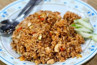

Nasi goreng mercon:
- Nasi goreng merupakan sajian nasi yang digoreng dalam sebuah wajan atau penggorengan menghasilkan cita rasa berbeda karena dicampur dengan bumbu-bumbu seperti bawang putih, bawang merah, merica dan kecap manis. Selain itu, ditambahkan bahan-bahan pelengkap seperti telur, sayur-sayuran, makanan laut, atau daging.
- Harga : Rp.14.500